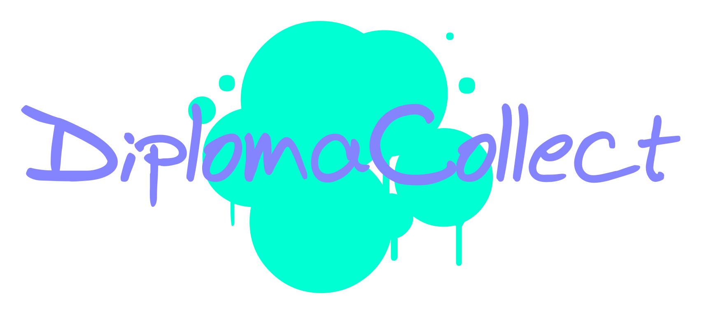

<ion-header>
  <ion-navbar color="secondary">
    <ion-title>
      我
    </ion-title>
  </ion-navbar>
</ion-header>

<ion-content >
  <ion-list>
    <ion-item>
       <ion-avatar item-left>
        
      </ion-avatar>
       <button  ion-item (click)="Selectedme()"><h1>yangdongce</h1>
       </button> 
    </ion-item>
    <ion-item>
        <ion-icon name="at" item-left></ion-icon>
       <button  ion-item (click)="Selectedwho()"><h1>谁看过我</h1>
       </button> 
    </ion-item>
    <ion-item>
        <ion-icon name="shirt" item-left></ion-icon>
       <button  ion-item (click)="Selectedstyle()"><h1>我的主题</h1>
       </button> 
    </ion-item>
    <ion-item>
        <ion-icon name="chatboxes" item-left></ion-icon>
       <button  ion-item (click)="Selectedreply()"><h1>我的回复</h1>
       </button>  
    </ion-item>
    <ion-item>
        <ion-icon name="heart" item-left></ion-icon>
       <button  ion-item (click)="Selectedlike()"><h1>我的收藏</h1>
       </button> 
    </ion-item>
    <ion-item>
        <ion-icon name="settings" item-left></ion-icon>
       <button  ion-item (click)="Selectedchange()"><h1>设置</h1>
       </button> 
    </ion-item>
  </ion-list>
</ion-content>
